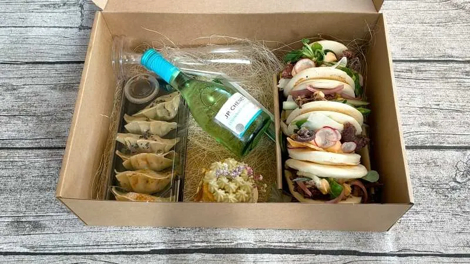
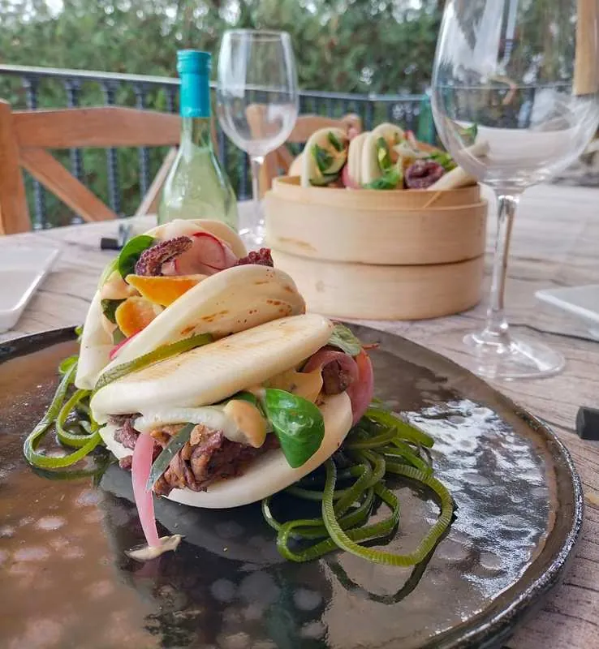
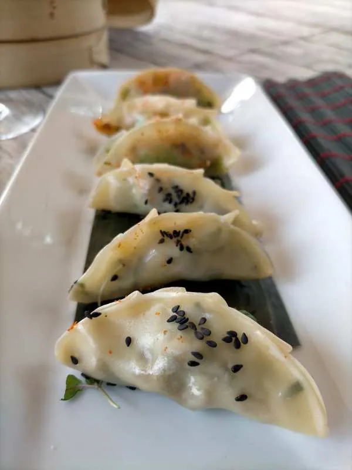
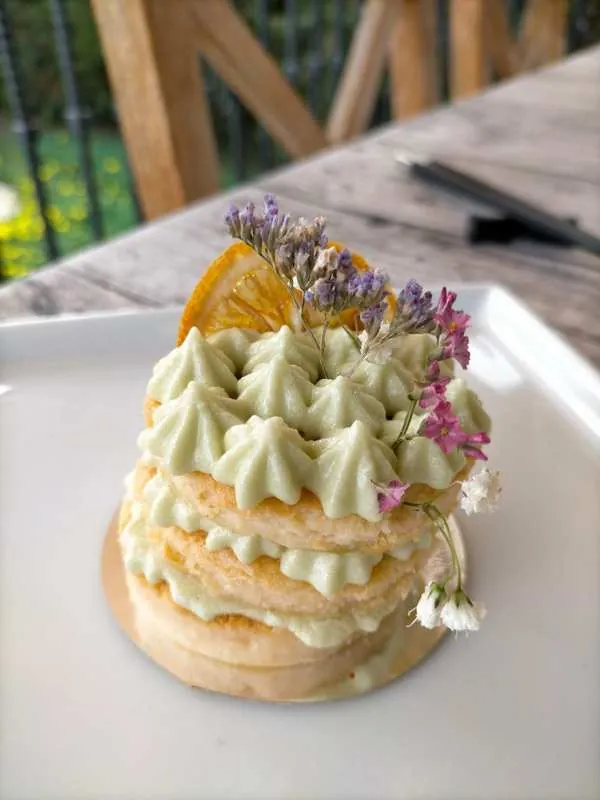

Hoy os quiero hablar de Thai Box, un nuevo take away de cocina fusión en Palma especializado en bollos Bao.
Thai Box para 2 personas
Su best seller es su caja Thai Box para dos, que entregan a domicilio e incluye:
4 Baos (de 2 tipos diferentes)
6 gyozas (de 2 tipos diferentes)
1 mini cheesecake japonés de té matcha
1 botellita de vino blanco
2 copas de plástico
2 pares de palillos
SUS PLATOS
Dos de los Baos son de pulpo mallorquín a la plancha con salsa picante a base de sriracha, daikon encurtido, rabanitos laminados y canónigos. Los otros dos son de costillar de ternera cocinado a baja temperatura con salsa hoisin, cebolla roja y pepino encurtidos y cebolla crujiente.
El bollo en sí es estupendo: esponjoso, nada seco y con una forma perfecta, y los dos rellenos son definitivamente, como los describe su autor, una explosión de sabores. Las combinaciones de sabores y texturas están muy logradas, y la salsa picante no es excesivamente potente, por lo que es apta para prácticamente cualquier paladar.
Bollos Bao
Gyozas
En cuanto a las gyozas, tres de ellas están rellenas de gambas y algas wakame y las otras tres de setas shiitake y bimi; estas últimas son veganas. Vienen acompañadas de salsa de soja.
El cheesecake es un pastelito cremoso y esponjoso con una crema de té matcha deliciosa, decorado al detalle con naranja deshidratada y flores.
Cheesecake japonés de té matcha
MÁS SOBRE THAI BOX
Quien lo prepara es Michael de Santis, un joven italiano de 26 años que ha desarrollado su pasión por la cocina en diferentes restaurantes de Barcelona, Formentera y Sheffield (Reino Unido).
Por ahora su negocio es totalmente online, pero en cuanto tenga oportunidad tiene intención de montar su propio restaurante en Palma. Su carta está todavía en proceso, pero incluirá también otros productos.
Las cajas Thai Box son una opción perfecta para cualquier celebración o regalo, o incluso para un picnic, ya que están hechas con mucho mimo y tienen muchos detalles decorativos como algas en la base de los Baos, hoja de plátano en la de las gyozas o flores en el cheesecake, que hacen que sea un detalle precioso y muy vistoso.
DATOS DE CONTACTO
Teléfono: 602 628 434
Entregas en Palma todos los días de 13:00 a 21:30 h